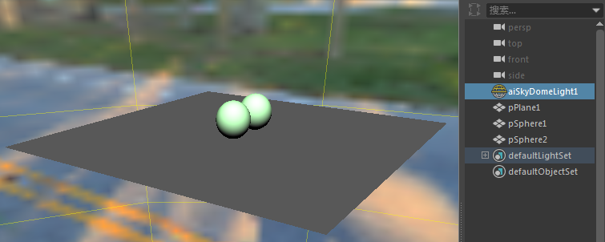
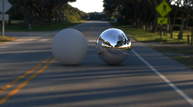
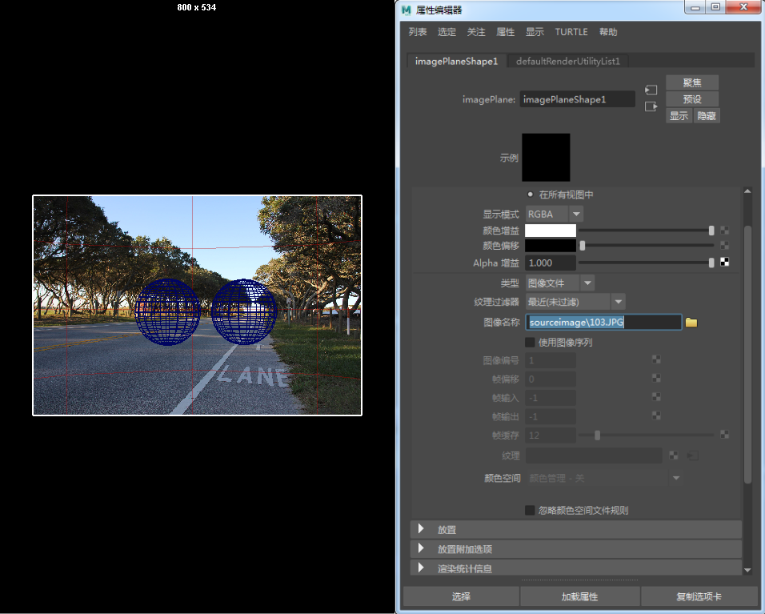
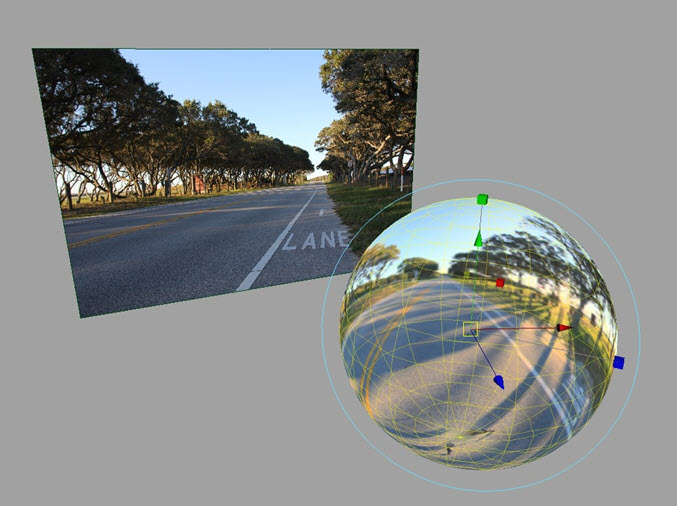

创建阴影蒙版
- 现在，我们的场景中需要一些地板阴影。创建一个大小足以捕捉场景中阴影的地板平面。

阴影蒙版

图像平面
- 选择渲染摄影机，并在“环境”(Environment)下面创建一个新的图像平面。按如下所示在图像平面内打开照片背板。在此示例中，我们将使用“103.jpg”。

在 Maya 中打开图像平面
- 渲染场景。此时应该会看到球体渲染在图像平面上，并具有 shadow_matte 着色器创建的阴影。
- 如果反射显示不正确，请旋转 _skydome_light_，直到它与背板一致。
